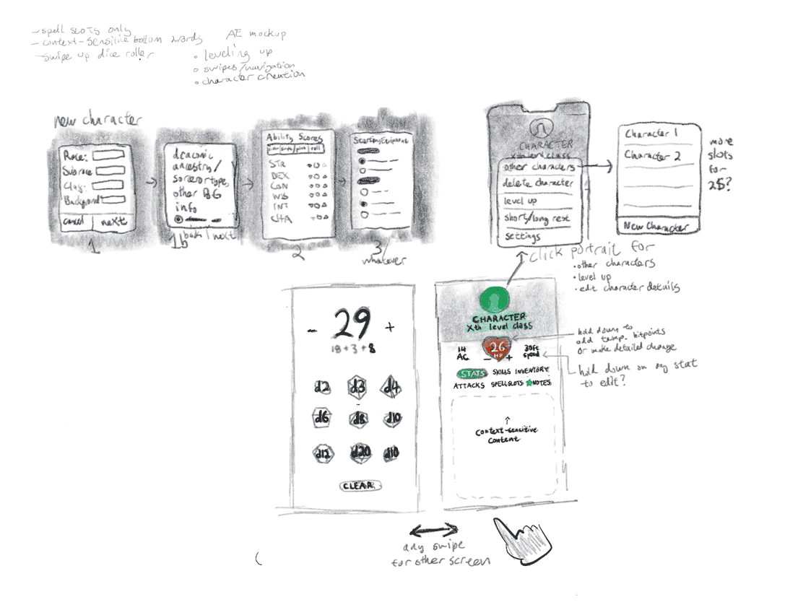

Mystic - Tabletop Assist Application
Tabletop Role-Playing Games like Dungeons & Dragons are extremely fun to play. Unfortunately, complicated rulebooks make it harder to keep track of essential mechanics in the game. The Mystic Tabletop App was developed to take the pen and paper out of Tabletop RPGs, increasing user engagement and saving people time at the game table.
Created by Sabrina Bezar, Daniel Kammerer, and Kelsey McGinnis
A survey was sent out to Tabletop forums on Facebook and Reddit. A total of 212 individuals responded, producing a specific objective based on most common responses. A persona was developed from this research and used throughout testing. Click below to visit the issuu publication.
Persona: Jeremy
Jeremy is a 27-year-old man who enjoys tabletop roleplaying games. His favorite is Dungeons & Dragons, particularly 5th edition. When he is a player in a game, he finds he makes mistakes when keeping track of his inventory, experience points, story details, and other essential game mechanics. When he runs a game, he struggles to quickly come up with exciting battles that are challenging for his characters, making Non-playable characters, and generating loot after a battle.
Jeremy loves playing with his friends but wishes there was an easier way to keep track of his information aside from pen and paper. He tries using existing websites like Roll20 and apps like DNDBeyond but is unsatisfied with the tools provided and finds that the User Interfaces are overly-complicated, but doesn’t have any alternatives. He would prefer a streamlined solution that allows for easy access as well as modification of content on the fly to keep his games quick yet personalized.
Create a Character
Create a Character allows for players of all skill levels to quickly and easily make a character. The app includes everything the player would need, including the option for customization and manual input. While randomization and dice-rolling functions are given, it's up to the player whether they roll by the app or by hand.
Adobe XD Full Interaction Module
Click Above to Explore
Create a Character Interaction Module and Flowmap
The image on the side is actually a fully interactive Adobe XD Embed which will allow you to seemlessly explore the section's interactions in its entirety. Click on specific buttons or use the arrow keys to toggle between panels once you interact with the module.
Alternatively if the module is not working for whatever reason, you can view the page on Adobe via the button below:

Player Home
The homepage is designed to be as accessible as possible, even to those new to Tabletop Role-Playing Games. The character pages have all the information a player needs to play the game, reducing the need for looking in the rulebook mid-session. No one can memorize everything, so Mystic makes it easier to keep it all in one place.
Adobe XD Full Interaction Module
Click Above to Explore
Player Home Interaction Module and Flowmap
The image on the side is actually a fully interactive Adobe XD Embed which will allow you to seemlessly explore the section's interactions in its entirety. Click on specific buttons or use the arrow keys to toggle between panels once you interact with the module.
Alternatively if the module is not working for whatever reason, you can view the page on Adobe via the button below:

Game Master Home
The Game Master side of the app is designed more as a tool to assist the Game Master in their general gameplay. Not as all-encompassing as the player guide, the customization tools for encounters, Non-playable character, loot and otherwise makes the Game Master's job easier and streamlines the work.
Adobe XD Full Interaction Module
Click Above to Explore
Game Master Interaction Module and Flowmap
The image on the side is actually a fully interactive Adobe XD Embed which will allow you to seemlessly explore the section's interactions in its entirety. Click on specific buttons or use the arrow keys to toggle between panels once you interact with the module.
Alternatively if the module is not working for whatever reason, you can view the page on Adobe via the button below:


